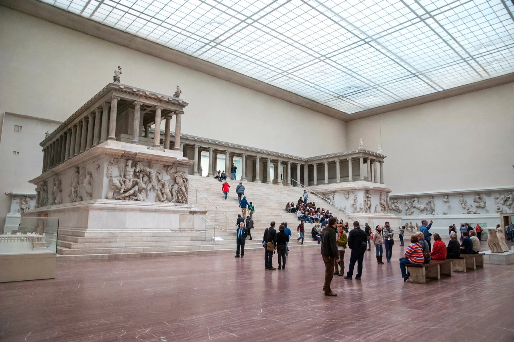

Pergamon Altar
| Pergamon Altar | |
|---|---|
 | |
| Created | 2nd century BC (reign of Eumenes II) |
| Original location | Acropolis of Pergamon |
| Current location | Pergamon Museum, Museum Island, Berlin |
| Subject | Gigantomachy (outer frieze); Life of Telephus (inner frieze) |
The Pergamon Altar is a monumental structure built in the 2nd century BC on the acropolis of the ancient Greek city of Pergamon in Asia Minor (modern Bergama, Turkey). It is a giant altar dedicated to Zeus, famous above all for the great frieze around its base depicting the Gigantomachy — the battle between the Olympian gods and the Giants — in high-relief marble sculpture that is among the supreme achievements of Hellenistic art.
Description
The altar stood on a podium roughly 35 by 33 metres, reached by a broad western staircase. A colonnade of Ionic columns surrounded the sacrificial court. The outer frieze, about 113 metres long and 2.3 metres high, shows dozens of gods and giants locked in dramatic combat, carved with exceptional depth and movement. A smaller inner frieze narrates the life of Telephus, the mythical founder of Pergamon, and is an early example of sequential narrative relief.
The altar was probably commissioned by King Eumenes II (r. 197–159 BC) to celebrate Attalid victories over the Galatians and the Seleucids. Some scholars have identified it with the "throne of Satan" mentioned in the Book of Revelation's letter to the church at Pergamum, though this is debated.
Excavation and reconstruction in Berlin
The ruins were excavated by German archaeologists under Carl Humann from 1878. By agreement with the Ottoman government, the frieze slabs were shipped to Berlin, where the altar was reconstructed inside the purpose-built Pergamon Museum, opened in 1930 on Museum Island. The altar hall has been closed for a long-term renovation of the museum, with full reopening of the building planned in phases.
Turkey has periodically called for the return of the altar, while the Berlin museums maintain that the fragments were exported legally under 19th-century agreements. The dispute is part of the wider international debate over cultural property acquired in the colonial era.